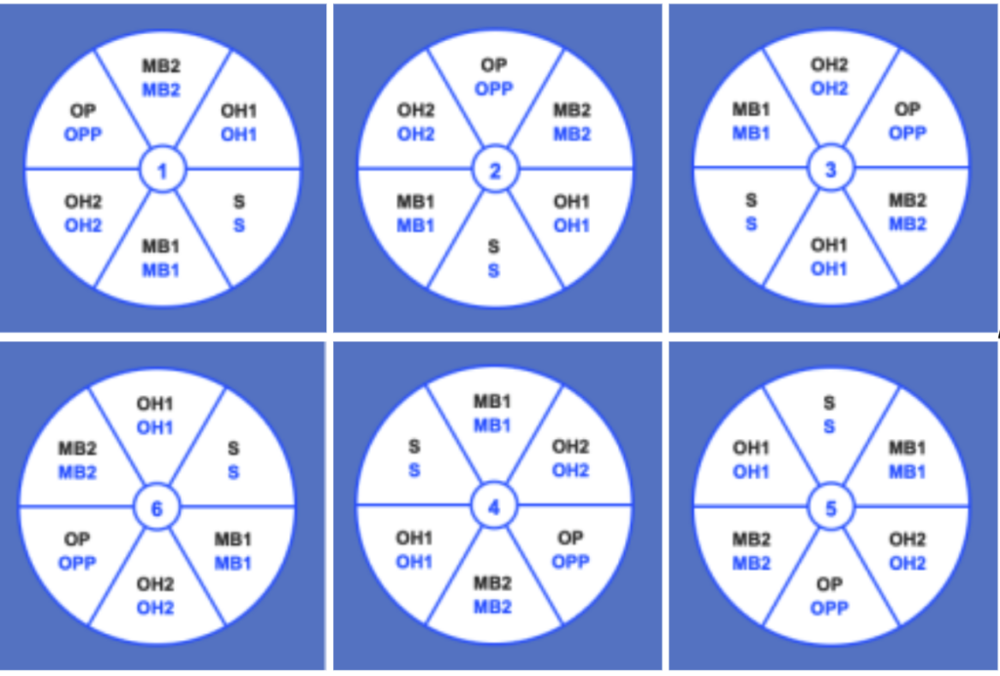

Indoor Volleyball is the most popular branch of volleyball. It is played with 6 players on the court, and is a fast-paced game of reflexes. There are different roles/postions in indoor volleyball.

The setter is arguably the most important player on the court. Depending on what rotation is being run, their base is either back right or close to the net. They, in general, are in charge of the second contact. They delicately and skillfully make quick decision about where the ball should go for the last contact and sets to to that spot for a perfect attack.

The outside hitter in the main hitter for the final attack. Their base is on the front row, left side of the court while in their front row position, and in back row center while in their back row position. The outside recieves the set from the setter, approaches, and attacks the other team with a spike, tip, etc.

The middle blocker is another primary hitter, but is also mainly in charge of blocking attacks from the other side. Their base is middle front, and they recieve and attacks sets from the setter just like the outside.

The opposite, sometimes nicknamed the "oppo" is the right-side hitter. Their job is identical to the outside; they recieve sets and attack on the other side.

The libero, sometimes nicknamed the "lib" is the master of defense. Because of this, teams sometimes use a defensive specialist (DS) rather than a libero, but the two positions play essentially the same role. They DO NOT let the ball drop. They are in charge of defense for attacks from the other team. They are comfortable diving, running etc. Also, they wear a different color jersey from the rest of the team because they are considered a special player that must be tracked separately. They fill in for a middle blocker.
Serving Rotations are the biggest learning curve for beginner volleyball players. They are based on the different positions on a wheel, as seen below:

This wheel of positions rotates with each server, however, in each rotation, the players must stay in the wheel positions relative to the other players, while also being close to their base once the ball is in play. Each rotation has a service and serve recieve postitions. There are also different rotation systems that can be run. The two main systems are a 5-1 or a 6-2. To learn more about these, check out the videos below:
click for link

click for link